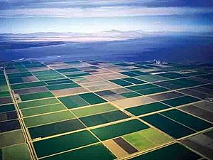

About Coughing Chris
CA (1990 - 1999) > AZ (1999 - 2000) > CA (2000 - 2016) > CO (2016 - 2018)

Cali: the first 10-ish years of my life
I was born in Brawley, CA, a small farm town near the border of Mexicali, and lived in Imperial for about 9 years. Attended school at Ben Hulse Elementary for as long as I can remember before moving. Dad found a better paying job in Yuma, Arizona, and so we moved.
Yuma and the Tumbleweed (DAMN it gets hot here)

We moved to Yuma when I was 9. Dad had found a better paying job working at an RV service shop. I attended Mary A. Otondo Elementary for about a year. It was here that I first road a motorcycle- an old Honda 3 wheeler. One very hot day (near the end of our stay in Yuma), I found my mother stairing out the window towards the street. I walked up and stood beside her, then looked the direction she was looking. There was a light breeze as we neared another monsoon season, and a tumbleweed blew past our house on the street before us. We stood there in silence for about 4-5 minutes, watching that tumbleweed, before my mother turned to me and said "Dang, we gotta get outta here..." LOL. Dad once again found a better job opportunity. This time back in Los Angeles. So we moved again.
Irvine, Beginning of my teen years

We moved to Irvine, CA (most likely the prettiest city I've ever lived in). Dad found the job that would end up becoming his specialty: A/V and home automation. The commute was killer... Irvine to Los Angeles, but dad made it work by lane splitting on his motorcycle. I went to Turtle Rock Elementary, where my homeroom teacher called me an "enigma" since I was "a good kid" but wasn't applying myself. I was sick of all the moving by this time, and tired of making new friends only to have to leave them to try and make other friends in a completely different city.